pacman::p_load(tidyverse, lubridate, ggridges, ggdist, ggstatsplot, patchwork, plotly)Take-home Exercise 2: Prototyping Modules for Shiny Application
1 Introduction
Financial technology (fintech) has become a critical driver of financial inclusion and digital transformation in emerging markets. However, despite this trend, publicly available datasets integrating real transactional behavior, product usage, customer satisfaction, and digital engagement remain hard-to-find.
The COFINFAD (Colombian Fintech Financial Analytics Dataset) addresses this gap by providing a comprehensive 12-month dataset (January - December 2023) covering the complete active customer base of a Colombian fintech company (48,723 customers) and over 3.1 million transaction records.
1.1 Purpose of the EDA Module
The objective of this Exploratory Data Analysis (EDA) module is to uncover behavioral, demographic, and engagement patterns that may influence:
Product adoption dynamics & Digital app engagement
Satisfaction and Net Promoter Score (NPS)
Transactions Pattern & Value
Customer lifetime value (CLV)
1.2 Analytical Questions For The Module
The EDA module is structured to address the following key questions:
How are customers distributed across demographic and income segments?
How do transaction frequency and transaction value vary across customer segments?
What is the relationship between digital engagement (app logins, feature diversity) and transactions behavior?
Are satisfaction and NPS aligned with behavioral indicators such as transaction volume and active products?
2 Getting started
2.1 Installing and loading the required libraries
The R packages used in this take-home exercise are:
tidyverse (i.e. readxl, tidyr, dplyr, ggplot2) for performing data science tasks such as importing, tidying, and wrangling data, as well as creating graphics;
ggthemes: to use additional themes for ggplot2
ggridges for creating ridgeline plots;
ggdist for visualising distributions and uncertainty;
ggstatsplot: to create graphics with details from statistical tests; and
patchwork: to prepare composite figure created using ggplot2.
2.2 Importing data
In this exercise, we will use the The COFINFAD dataset. It is organized into two relational CSV files:
customer_data.csv: Contains 54 customer-level attributes including demographics, product holdings, satisfaction metrics, and aggregated behavioral features (one row per customer; 48,723 rows).
transactions_data.csv: Contains transaction records over the 12-month period (3,159,157 rows), linked via
customer_id.
In the code chunk below, read_csv() is used to import the two CSV files.
customer_data <- read_csv("data/customer_data.csv")
transactions_data <- read_csv("data/transactions_data.csv") glimpse() will be used to check the structure of the data.
glimpse(customer_data)Rows: 48,723
Columns: 54
$ customer_id <dbl> 93716481, 49020929, 52690950, 23199751, 619…
$ age <dbl> 44, 44, 45, 45, 44, 45, 44, 44, 45, 44, 44,…
$ gender <chr> "Male", "Male", "Male", "Male", "Female", "…
$ location <chr> "Pereira, Risaralda", "Cali, Valle del Cauc…
$ income_bracket <chr> "Very High", "Medium", "High", "High", "Med…
$ occupation <chr> "Engineer", "Construction Worker", "Constru…
$ education_level <chr> "Master", "Bachelor", "Bachelor", "High Sch…
$ marital_status <chr> "Married", "Married", "Married", "Single", …
$ household_size <dbl> 5, 2, 4, 2, 3, 4, 4, 3, 1, 3, 5, 3, 3, 7, 3…
$ acquisition_channel <chr> "Partnership", "Paid Ad", "Paid Ad", "Refer…
$ customer_segment <chr> "occasional", "regular", "inactive", "inact…
$ savings_account <lgl> TRUE, TRUE, TRUE, TRUE, TRUE, TRUE, TRUE, T…
$ credit_card <lgl> TRUE, FALSE, FALSE, FALSE, TRUE, TRUE, TRUE…
$ personal_loan <lgl> FALSE, FALSE, FALSE, FALSE, FALSE, FALSE, F…
$ investment_account <lgl> FALSE, FALSE, TRUE, TRUE, FALSE, TRUE, FALS…
$ insurance_product <lgl> TRUE, FALSE, TRUE, FALSE, FALSE, FALSE, FAL…
$ active_products <dbl> 1, 5, 3, 2, 1, 1, 1, 4, 2, 3, 1, 5, 3, 1, 1…
$ app_logins_frequency <dbl> 15, 30, 4, 15, 19, 15, 44, 22, 7, 11, 7, 30…
$ feature_usage_diversity <dbl> 3, 0, 4, 4, 1, 4, 6, 1, 1, 6, 3, 1, 2, 1, 3…
$ bill_payment_user <lgl> FALSE, TRUE, TRUE, TRUE, FALSE, TRUE, TRUE,…
$ auto_savings_enabled <lgl> FALSE, FALSE, FALSE, FALSE, FALSE, TRUE, FA…
$ credit_utilization_ratio <dbl> 0.17871029, NA, NA, NA, 0.40360553, 0.07786…
$ international_transactions <dbl> 1, 1, 1, 1, 0, 0, 0, 0, 0, 1, 0, 0, 0, 1, 0…
$ failed_transactions <dbl> 0, 0, 0, 1, 0, 0, 1, 1, 0, 0, 1, 0, 0, 1, 0…
$ tx_count <dbl> 76, 10, 10, 23, 18, 15, 24, 45, 134, 13, 18…
$ avg_tx_value <dbl> 1679872.4, 5445810.0, 640335.0, 660180.4, 1…
$ total_tx_volume <dbl> 127670300, 54458100, 6403350, 15184150, 262…
$ first_tx <date> 2023-01-05, 2023-02-05, 2023-01-31, 2023-0…
$ last_tx <date> 2023-12-25, 2023-12-20, 2023-12-12, 2023-1…
$ base_satisfaction <dbl> 9.213372, 6.073093, 8.198643, 7.529577, 6.6…
$ tx_satisfaction <dbl> 0.380, 0.050, 0.050, 0.115, 0.090, 0.075, 0…
$ product_satisfaction <dbl> 0.6, 0.2, 0.6, 0.4, 0.4, 0.6, 0.4, 0.4, 0.6…
$ satisfaction_score <dbl> 5, 3, 4, 4, 3, 4, 4, 4, 5, 4, 4, 5, 4, 3, 4…
$ nps_score <dbl> -7, -46, -29, -31, -47, -29, -34, -36, -4, …
$ last_survey_date <date> 2023-12-16, 2023-05-05, 2023-11-16, 2023-0…
$ support_tickets_count <dbl> 1, 1, 0, 2, 2, 1, 1, 0, 2, 0, 0, 2, 3, 1, 0…
$ resolved_tickets_ratio <dbl> 0.0000000, 1.0000000, 0.0000000, 0.5000000,…
$ app_store_rating <dbl> 3.5, 4.0, 5.0, 4.5, 4.0, 4.0, 5.0, 4.5, 4.5…
$ feedback_sentiment <chr> "Neutral", "Positive", "Positive", "Positiv…
$ feature_requests <chr> "Budgeting tools", NA, NA, "Cryptocurrency …
$ complaint_topics <chr> NA, NA, NA, NA, "App performance", NA, NA, …
$ clv_segment <chr> "Gold", "Bronze", "Gold", "Bronze", "Gold",…
$ monthly_transaction_count <dbl> 1.428571, 1.571429, 2.500000, 1.555556, 2.1…
$ average_transaction_value <dbl> 6054025.0, 2127413.6, 3575915.0, 1513353.6,…
$ total_transaction_volume <dbl> 60540250, 23401550, 35759150, 21186950, 116…
$ transaction_frequency <dbl> 0.03076923, 0.03293413, 0.05000000, 0.04778…
$ last_transaction_date <date> 2023-12-05, 2023-12-18, 2023-10-27, 2023-1…
$ preferred_transaction_type <chr> "Transfer", "Transfer", "Transfer", "Transf…
$ first_transaction_date <date> 2023-01-05, 2023-02-05, 2023-01-31, 2023-0…
$ weekend_transaction_ratio <dbl> 0.30000000, 0.18181818, 0.30000000, 0.14285…
$ avg_daily_transactions <dbl> 0.03076923, 0.03293413, 0.05000000, 0.04778…
$ customer_tenure <dbl> 11.633333, 11.500000, 8.766667, 10.733333, …
$ churn_probability <dbl> 0.3622688, 0.1817896, 0.3212651, 0.3366287,…
$ customer_lifetime_value <dbl> 312414808, 167022286, 19403711, 35978105, 3…glimpse(transactions_data)Rows: 3,159,157
Columns: 4
$ customer_id <dbl> 93716481, 93716481, 93716481, 93716481, 93716481, 93716481…
$ date <date> 2023-11-23, 2023-01-05, 2023-11-05, 2023-04-14, 2023-08-0…
$ amount <dbl> 1262800, 928900, 1683100, 4507350, 2096150, 2124050, 11087…
$ type <chr> "Transfer", "Withdrawal", "Payment", "Payment", "Payment",…2.3 Data Wrangling
2.3.1 Data Type Correction
Variables are converted into appropriate data types:
Categorical variables →
factorBoolean variables →
logicalDate variables →
DateNumeric measures →
numericorinteger
customer_data <- customer_data %>%
mutate(
gender = as.factor(gender),
income_bracket = as.factor(income_bracket),
education_level = as.factor(education_level),
marital_status = as.factor(marital_status),
acquisition_channel = as.factor(acquisition_channel),
customer_segment = as.factor(customer_segment),
clv_segment = as.factor(clv_segment),
savings_account = as.logical(savings_account),
credit_card = as.logical(credit_card),
personal_loan = as.logical(personal_loan),
investment_account = as.logical(investment_account),
insurance_product = as.logical(insurance_product),
first_tx = as.Date(first_tx),
last_tx = as.Date(last_tx),
last_survey_date = as.Date(last_survey_date)
)transactions_data <- transactions_data %>%
mutate(
date = as.Date(date),
type = as.factor(type)
)2.3.2 Missing values inspection
customer_data %>%
summarise(across(everything(), ~sum(is.na(.))))# A tibble: 1 × 54
customer_id age gender location income_bracket occupation education_level
<int> <int> <int> <int> <int> <int> <int>
1 0 0 0 0 0 0 0
# ℹ 47 more variables: marital_status <int>, household_size <int>,
# acquisition_channel <int>, customer_segment <int>, savings_account <int>,
# credit_card <int>, personal_loan <int>, investment_account <int>,
# insurance_product <int>, active_products <int>, app_logins_frequency <int>,
# feature_usage_diversity <int>, bill_payment_user <int>,
# auto_savings_enabled <int>, credit_utilization_ratio <int>,
# international_transactions <int>, failed_transactions <int>, …transactions_data %>%
summarise(across(everything(), ~sum(is.na(.))))# A tibble: 1 × 4
customer_id date amount type
<int> <int> <int> <int>
1 0 0 0 02.3.3 Deriving Variables
Age Group: Age is grouped into interpretable bins for later filtering and segmentation analysis.
customer_data <- customer_data %>%
mutate(
age = as.integer(age),
age_group = case_when(
is.na(age) ~ "Unknown",
age < 18 ~ "<18",
age <= 25 ~ "18-25",
age <= 35 ~ "26-35",
age <= 45 ~ "36-45",
age <= 55 ~ "46-55",
age <= 65 ~ "56-65",
TRUE ~ "65+"
),
age_group = factor(
age_group,
levels = c("<18", "18-25", "26-35", "36-45", "46-55", "56-65", "65+", "Unknown")
)
)
table(customer_data$age_group, useNA = "ifany")
<18 18-25 26-35 36-45 46-55 56-65 65+ Unknown
0 0 16219 16139 0 16365 0 0 2.3.4 Data Validation Checks
Basic statistical summaries using summary() are performed to confirms data reliability before proceeding to exploratory visualization.
summary(customer_data$age) Min. 1st Qu. Median Mean 3rd Qu. Max.
29.00 30.00 45.00 44.54 59.00 60.00 summary(customer_data$churn_probability) Min. 1st Qu. Median Mean 3rd Qu. Max.
0.1143 0.3029 0.3540 0.3429 0.3927 0.5006 summary(customer_data$customer_lifetime_value) Min. 1st Qu. Median Mean 3rd Qu. Max.
0.000e+00 5.841e+07 1.297e+08 3.282e+08 2.974e+08 1.777e+10 write_rds(customer_data, "data/rds/customer_data.rds")
write_rds(transactions_data, "data/rds/transactions_data.rds")3. Univariate Analysis
3.1 Demographic distributions of customer (age, gender, income, location)
age_group_summary <- customer_data %>%
count(age_group) %>%
mutate(
prop = n / sum(n),
label = scales::percent(prop, accuracy = 0.1)
)
age_group_summary# A tibble: 3 × 4
age_group n prop label
<fct> <int> <dbl> <chr>
1 26-35 16219 0.333 33.3%
2 36-45 16139 0.331 33.1%
3 56-65 16365 0.336 33.6%ch1 <- ggplot(age_group_summary, aes(x = "", y = n, fill = age_group)) +
geom_col(width = 1, color = "white") +
coord_polar(theta = "y") +
geom_text(aes(label = label),
position = position_stack(vjust = 0.5),
size = 3) +
labs(
title = "Customer Age Group Distribution",
fill = "Age Group"
) +
theme_void()
ch2 <- ggplot(customer_data, aes(x = gender)) +
geom_bar(fill = "darkblue") +
labs(
title = "Distribution of Customer Gender",
x = "Gender",
y = "Number of Customers"
) +
theme_minimal()
ch1 + ch2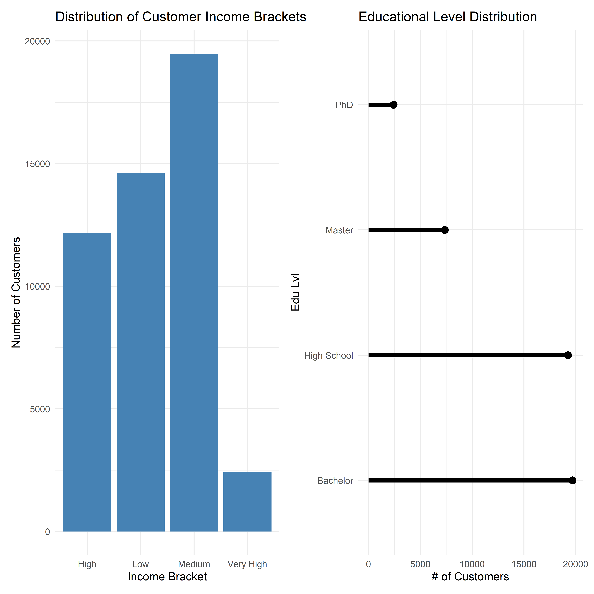
ggplot(customer_data, aes(x = income_bracket)) +
geom_bar(fill = "steelblue") +
labs(
title = "Distribution of Customer Income Brackets",
x = "Income Bracket",
y = "Number of Customers"
) +
theme_minimal()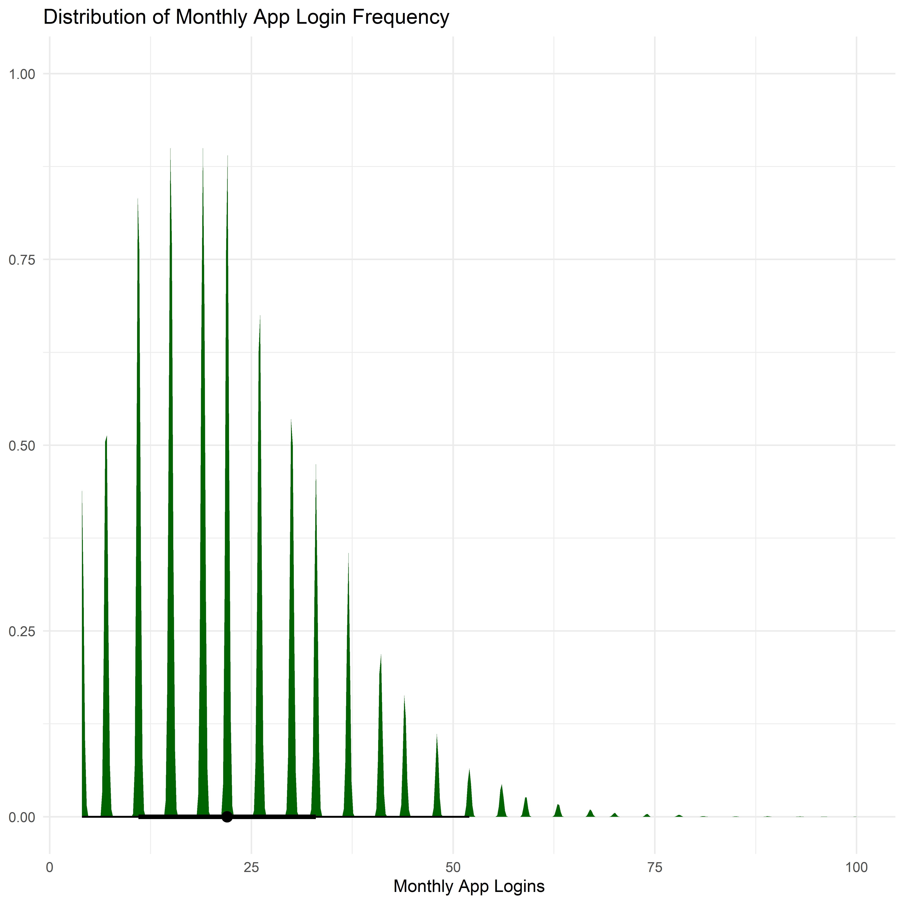
Education Level
edu_sum <- customer_data %>%
count(education_level, sort = TRUE) %>%
mutate(education_level = fct_inorder(education_level))
ggplot(edu_sum, aes(x = n, y = education_level)) +
geom_segment(aes(x = 0, xend = n, yend = education_level), linewidth = 2) +
geom_point(size = 3) +
labs(
title = "Educational Level Distribution",
x = "# of Customers",
y = "Edu Lvl"
) +
theme_minimal()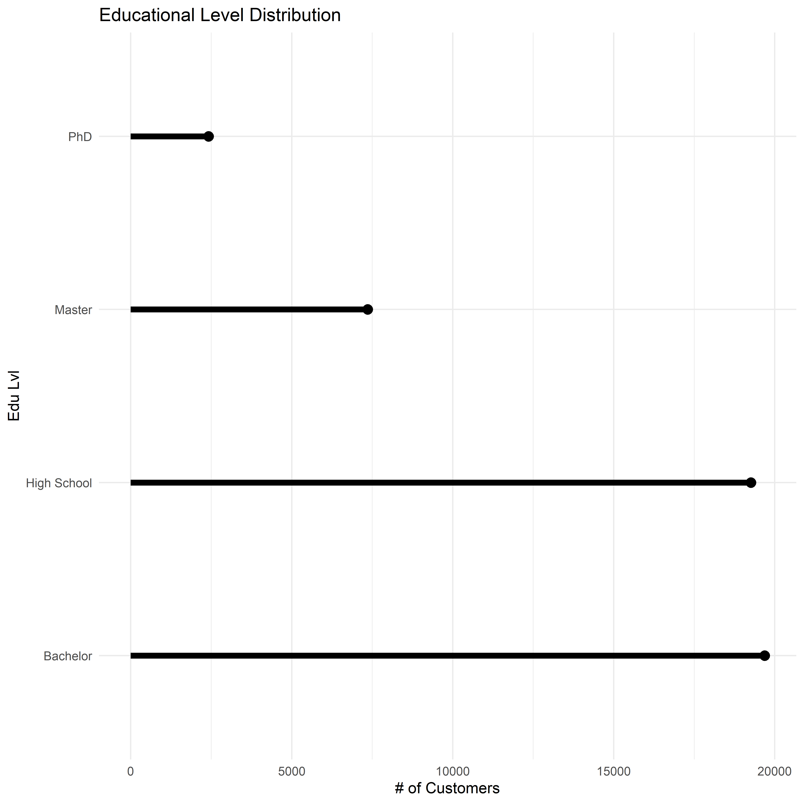
Martial Status
mar_sum <- customer_data %>%
count(marital_status, sort = TRUE) %>%
mutate(marital_status = fct_inorder(marital_status))
ggplot(mar_sum, aes(x = n, y = marital_status)) +
geom_segment(aes(x = 0, xend = n, yend = marital_status), linewidth = 2) +
geom_point(size = 3) +
labs(
title = "Marital Status Distribution",
x = "Number of Customers",
y = "Marital Status"
) +
theme_minimal()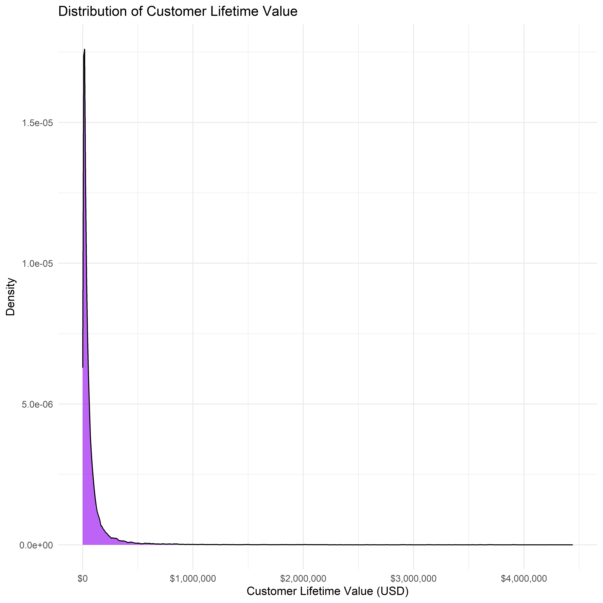
3.2 Customer Engagement Behaviour
Customer engagement is an important indicator of platform activity and potential retention.
App Login Frequency Distribution
ggplot(customer_data, aes(x = app_logins_frequency)) +
stat_halfeye(
adjust = .7,
width = .6,
fill = "darkgreen"
) +
labs(
title = "Distribution of Monthly App Login Frequency",
x = "Monthly App Logins",
y = NULL
) +
theme_minimal()
Satisfaction Score Distribution
ggplot(customer_data, aes(x = satisfaction_score)) +
geom_histogram(
bins = 10,
fill = "orange",
color = "white"
) +
labs(
title = "Distribution of Customer Satisfaction Scores",
x = "Satisfaction Score",
y = "Frequency"
) +
theme_minimal()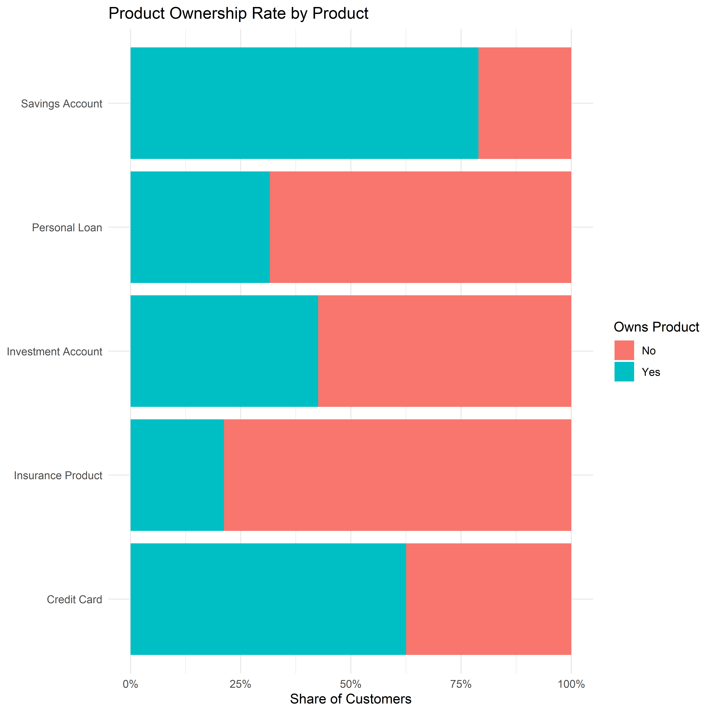
CLV Distribution
ggplot(customer_data, aes(x = customer_lifetime_value)) +
geom_density(fill = "purple", alpha = 0.6) +
scale_x_log10() +
labs(
title = "Distribution of Customer Lifetime Value",
x = "Customer Lifetime Value (log scale)",
y = "Density"
) +
theme_minimal()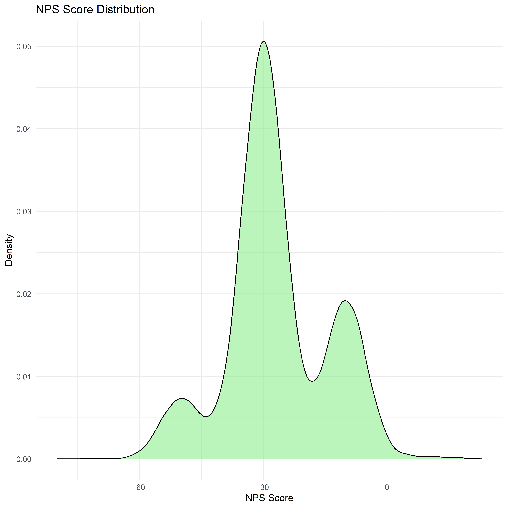
Churn Probability Distribution
ggplot(customer_data, aes(x = churn_probability)) +
geom_density(fill = "red", alpha = 0.6) +
labs(
title = "Distribution of Customer Churn Probability",
x = "Churn Probability",
y = "Density"
) +
theme_minimal()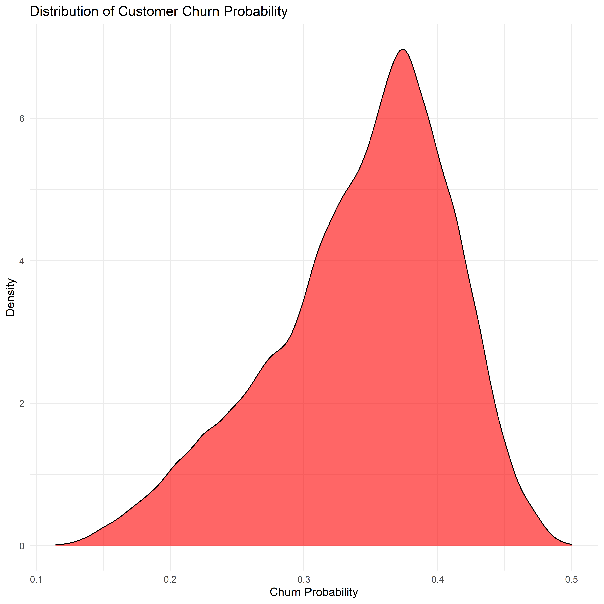
Product ownership distribution
prod_long <- customer_data %>%
select(savings_account, credit_card, personal_loan, investment_account, insurance_product) %>%
pivot_longer(everything(), names_to = "product", values_to = "has_product") %>%
mutate(
has_product = if_else(has_product, "Yes", "No"),
product = str_replace_all(product, "_", " ") %>% str_to_title()
) %>%
count(product, has_product) %>%
group_by(product) %>%
mutate(prop = n / sum(n)) %>%
ungroup()
ggplot(prod_long, aes(x = product, y = prop, fill = has_product)) +
geom_col(position = "fill") +
coord_flip() +
scale_y_continuous(labels = scales::percent) +
labs(
title = "Product Ownership Rate by Product",
x = NULL,
y = "Share of Customers",
fill = "Owns Product"
) +
theme_minimal()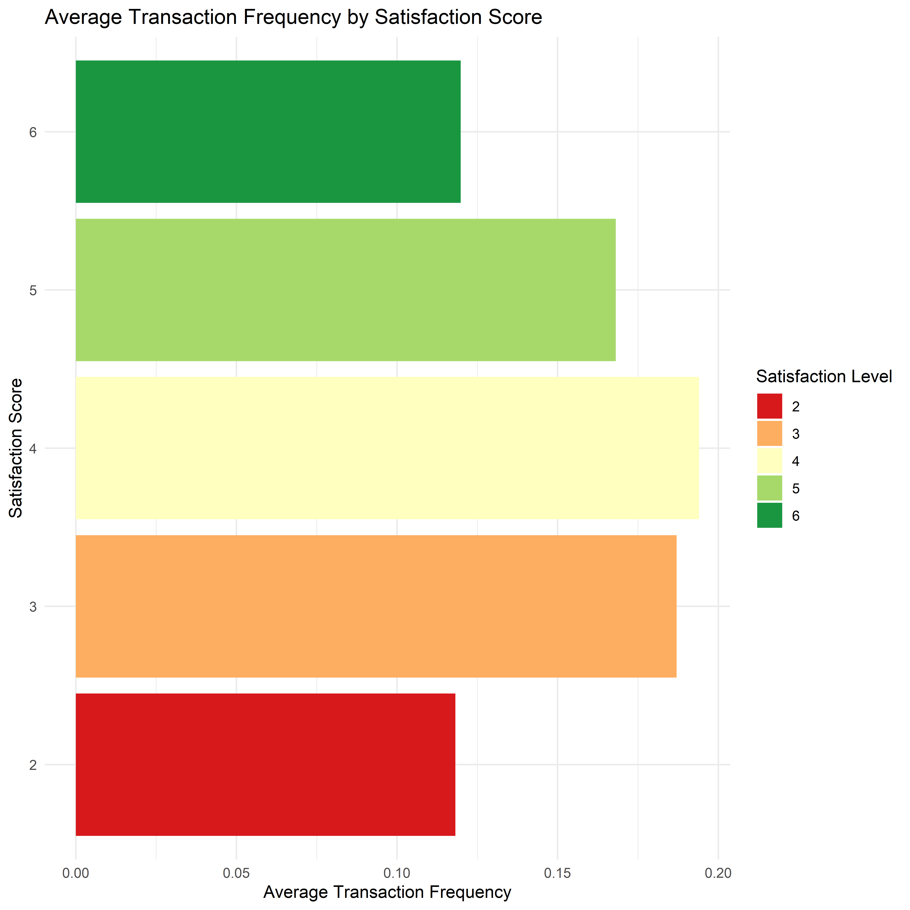
NPS distribution
ggplot(customer_data, aes(x = nps_score, y = "")) +
stat_slabinterval(point_interval = median_qi, .width = c(.5, .8, .95)) +
labs(
title = "NPS Score Distribution (Slab + Interval)",
x = "NPS Score (0–10)",
y = NULL
) +
theme_minimal()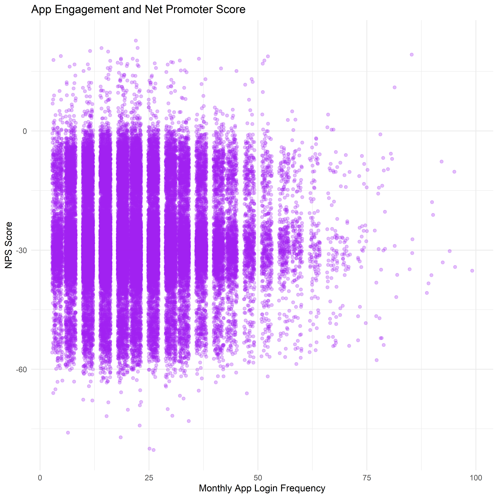
4. Bivariate / Multivariate Analysis
App Login Frequency vs Churn Probability
ggplot(customer_data, aes(x = app_logins_frequency, y = churn_probability)) +
geom_point(alpha = 0.3, color = "steelblue") +
geom_smooth(method = "loess", color = "red") +
labs(
title = "App Login Frequency vs. Churn Probability",
x = "Monthly App Login Frequency",
y = "Churn Probability"
) +
theme_minimal()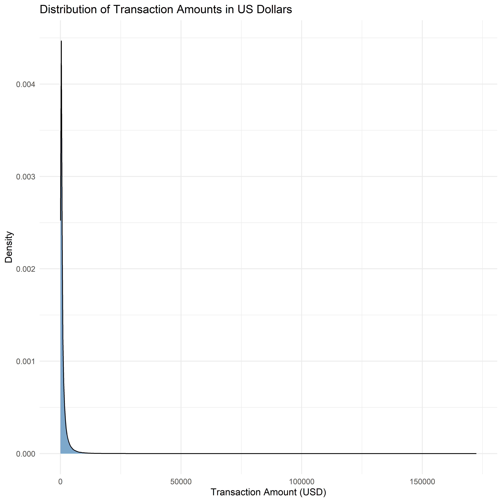
Transaction Frequency vs Satisfaction Score
ggplot(customer_data, aes(x = tx_count, y = satisfaction_score)) +
geom_point(alpha = 0.3) +
geom_smooth(method = "loess", color = "darkgreen") +
labs(
title = "Transaction Activity and Customer Satisfaction",
x = "Total Number of Transactions",
y = "Satisfaction Score"
) +
theme_minimal()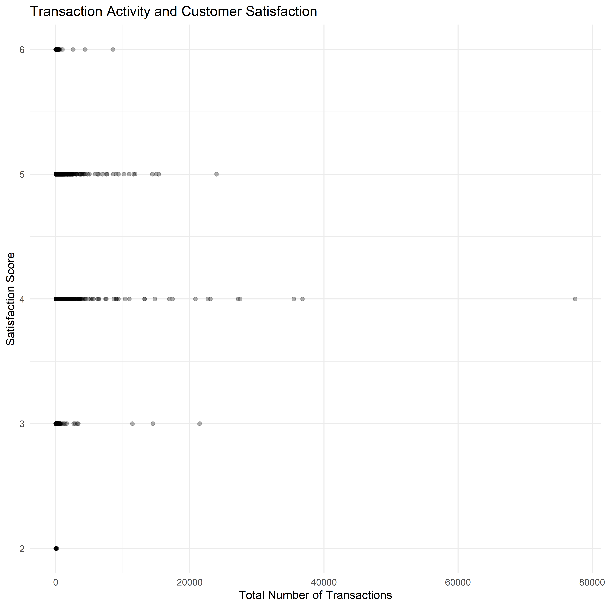
App Logins vs NPS Score
ggplot(customer_data, aes(x = app_logins_frequency, y = nps_score)) +
geom_jitter(alpha = 0.3, color = "purple") +
geom_smooth(method = "loess", color = "black") +
labs(
title = "App Engagement and Net Promoter Score",
x = "Monthly App Login Frequency",
y = "NPS Score"
) +
theme_minimal()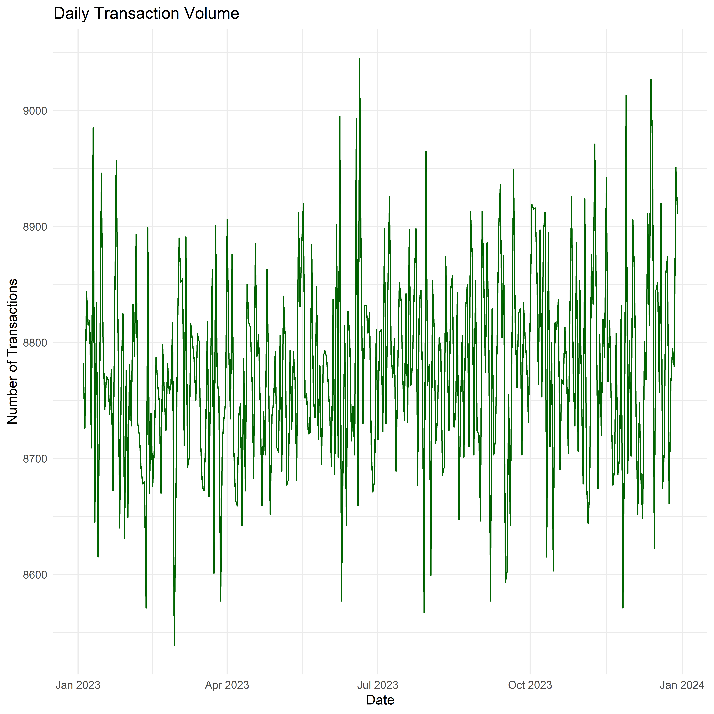
More comparisons to consider:
CLV vs active products
Satisfaction vs NPS
Transaction volume vs churn / satisfaction / NPS
5. Transaction Behavior
(ongoing)
Transaction types distribution
Amount distribution
Time trend of transactions
Weekend vs weekday pattern
6. Interactive Design for Shiny
7. UI Design
Reference
- Kam, T. S. (2023). R for Visual Analytics.